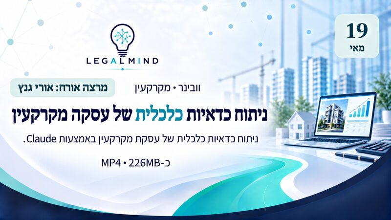
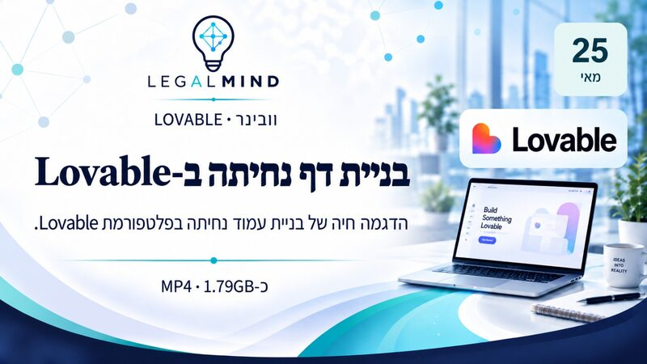
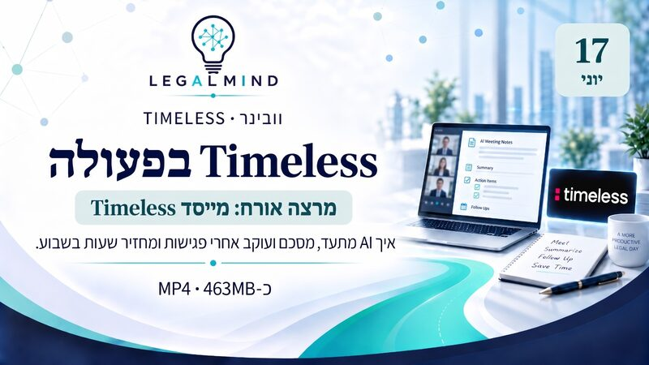

הקלטות מלאות של הוובינרים שקיימנו - כלי AI מעשיים, הדגמות חיות ואורחים מהתעשייה. לחיצה על "צפייה בהקלטה" פותחת את הסרטון ב-Google Drive.
בניית נוכחות מקצועית בלינקדאין - מסדרת שיווק ו-AI לעו"ד מקרקעין.
איך לגרום למשרד להופיע בתשובות של כלי בינה מלאכותית.
עבודה נכונה עם Claude בתוך Word - עריכת מסמכים משפטיים.

ניתוח כדאיות כלכלית של עסקת מקרקעין באמצעות Claude.

הדגמה חיה של בניית עמוד נחיתה בפלטפורמת Lovable.

איך AI מתעד, מסכם ועוקב אחרי פגישות ומחזיר שעות בשבוע.
בניית דף נחיתה ב-Base44 שמאותר על ידי כלי בינה מלאכותית (GEO).
מפגש קהילתי של Legal Mind Family.
בניית סוכן AI אישי בשידור חי ב-Base44 וחיבורו ל-WhatsApp.